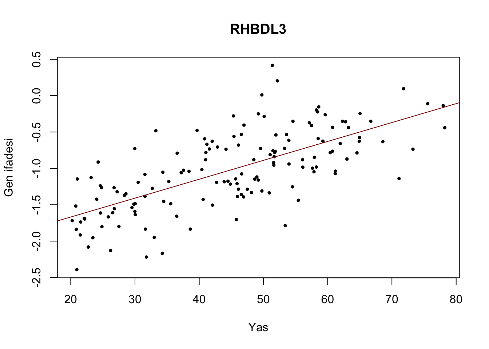
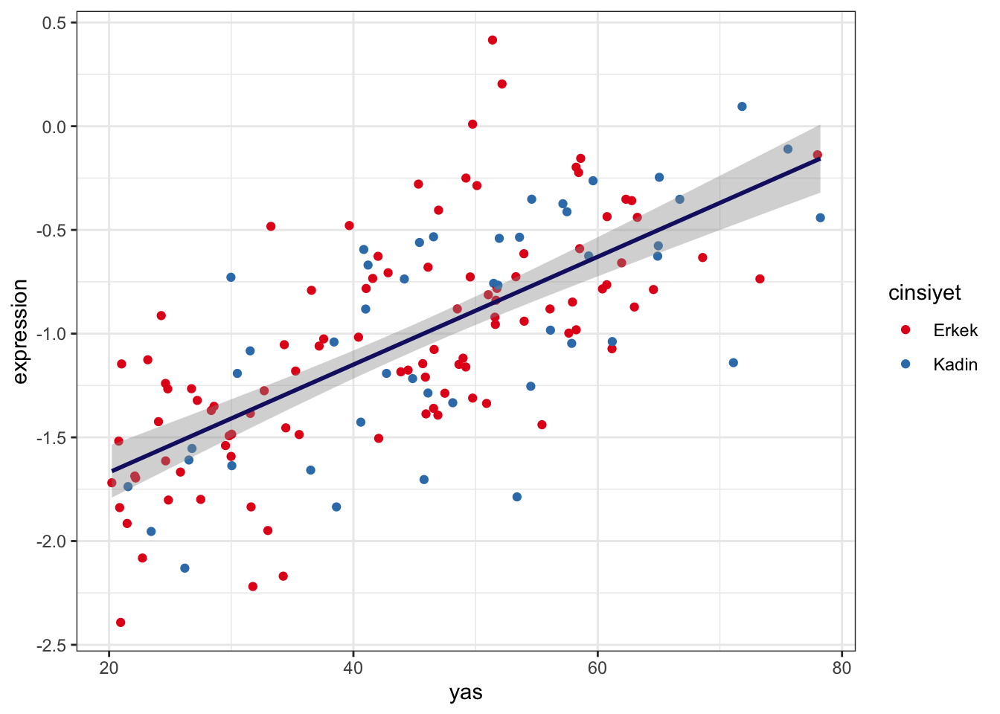

Bölüm 7 Yasla degisim analizi
Diyelim ki sadece dogum sonrasi donemde 20 sonrasi yasta yasla degisen genlerle ilgileniyoruz. Bunun icin ilk olarak veriyi subset etmeliyiz. Yas’in 20den buyuk oldugu bireyleri almaliyiz:
subsamp = names(which(yas>=20))
subexp = genexpr_qn[,subsamp]
subyas = yas[subsamp]yasladegisim = apply(subexp, 1, function(x){
co = cor.test(x, subyas[colnames(subexp)], method = 'spearman')
c(co$est, co$p.val)
})dim(yasladegisim)## [1] 2 17160yasladegisim = t(yasladegisim)
head(yasladegisim)## rho
## CTSD -0.03253336 0.6956624723
## EEF2 -0.12309924 0.1374343793
## VIM 0.28300932 0.0005395356
## GSN 0.11697104 0.1581010511
## RPN2 -0.22977129 0.0052073498
## POLR2A 0.01173037 0.8878589579colnames(yasladegisim) = c('rho','p')
yasladegisim = cbind(yasladegisim, p.adjust(yasladegisim[,'p'], method= 'fdr'))Hangi genler yasla istatistiksel olarak anlamli degisim gosteriyor?
anlamli = names(which(yasladegisim[,3]<=0.05))
table(yasladegisim[rownames(yasladegisim)%in%anlamli,1]>=0)##
## FALSE TRUE
## 1538 1418Bunlardan 1419 tanesi artis yonunde anlamli degisim gosteriyor, 1538 tanesi ise dusus. Bunlardan en cok artis gostereni secip gorsellestirelim:
maxartis = names(which.max(yasladegisim[,1]))
yasladegisim[maxartis,]## rho p
## 6.980232e-01 8.761466e-23 1.002312e-19plot(x = subyas, y = subexp[maxartis,], pch = 19, cex = 0.5, xlab='Yas',
ylab = 'Gen ifadesi', main = maxartis)
abline(lm(subexp[maxartis,]~subyas), col = 'darkred',cex = 2)
pdf('./yasladegisim.pdf')
plot(x = subyas, y = subexp[maxartis,], pch = 19, cex = 0.5, xlab='Yas',
ylab = 'Gen ifadesi', main = maxartis)
abline(lm(subexp[maxartis,]~subyas), col = 'darkred',cex = 2)
dev.off()## quartz_off_screen
## 2write.csv(x = yasladegisim, file = './yasladegisim.csv',quote = F,
row.names = T)Ayni figuru ggplot ile cizelim:
mydat = data.frame(expression = subexp[maxartis,], sample = colnames(subexp),
yas = subyas[colnames(subexp)],cinsiyet = cinsiyet[colnames(subexp)])
ggplot(mydat, aes(x = yas, y = expression)) +
geom_point(aes(color = cinsiyet)) +
geom_smooth(method = 'lm', color = 'midnightblue') +
scale_color_brewer(type = 'qual', palette = 6) +
theme_bw()## `geom_smooth()` using formula 'y ~ x'